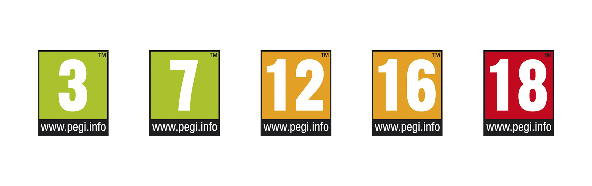

Жанр - один из основных критериев при выборе видеоигры для подростка. Давайте рассмотрим самые популярные жанры видеоигр в России:
Игрок управляет персонажем, который использует оружие, чтобы атаковать врагов в режиме реального времени.
Игрок управляет транспортным средством, пытаясь достичь цели как можно быстрее, часто на гоночной трассе или в городской среде.
Игрок управляет ресурсами для достижения цели. Например, он может управлять армией или иметь бизнес-империю.
Игрок управляет персонажем, исследуя мир и выполняя различные задачи, такие как решение головоломок или борьба с врагами.
Возрастной рейтинг видеоигры также очень полезен при выборе игры для подростка. Что же это такое? Возрастной рейтинг - это утверждённая система оценок видеоигр специальной комиссией, которая присваивает видеоигре определённую возрастную категорию. Существуют различные системы оценок, используемые в разных странах. Например, в России существует система RARS (Russian Age Rating System), в Европе используется PEGI (Pan European Game Information), а в США - ESRB (Entertainment Software Rating Board). Узнать оценку видеоигры можно взглянув на коробку с диском или поискав нужную информацию в интернете. На коробке с диском будут нанесены специальные иконки, которые отличаются в зависимости от конкретной системы оценки. Стоит отметить, что такая оценка является лишь рекомендацией, а не законодательным требованием.
На представленном выше изображении изображены иконки рейтинга RARS, используемого в России. Цифры означают минимальный возраст, достигнув которого можно безопасно играть в игру, например, 16+ означает, что играть в игру стоит людям старше 16 лет. Аналогичным образом устроен и рейтинг PEGI:
Гораздо сложнее обстоят дела с рейтингом ESRB, используемым в основном в США. Их оценка делит игры на следующие категории:
Итак, вы уже знаете, что такое возрастной рейтинг видеоигры. Отлично! Но стоит знать и то, чего можно от него ожидать. Какой потенциально опасный контент может поджидать в видеоиграх?
Важно обращать внимание, чем именно занимается в играх ребёнок, хотя в большинстве случаев и достаточно возрастного рейтинга.
Само собой, игры могут принести и огромное количество пользы. Это очень сильно зависит от жанра, поэтому рассмотрим для начала пользу четырёх самых популярных жанров в России.
Такие игры развивают реакцию и координацию движений, улучшают когнитивные способности.
Такие игры могут способствовать развитию навыков вождения, а также часто предоставляют информацию о машинах, об их устройстве.
Игры в этом жанре развивают навыки планирования, принятия решений и стратегического мышления, ведь это необходимо, если ребёнок хочет стать хорошим градостроителем или полководцем!
Этот жанр развивает нестандартное мышление и фантазию, которые нужны для решения головоломок.
Особняком стоят в вопросе пользы видеоигр образовательные игры. Таких игр очень много, и вот некоторые из них:
Игры, выделенные цветом, доступны на русском языке, и их можно найти, просто тыкнув на название. Безусловно, образовательных игр гораздо больше, их можно просто найти в поиске, я же привёл лишь самые большие и популярные из них.
Онлайн-игры, которые также иногда называются "игры с мультиплеером", представляют собой игры, в которые можно играть с другими игроками. Сами по себе они часто могут не представлять опасность, но нежелательный контент могут привносить эти самые другие игроки. Про возможный вред таких игр уже было сказано ранее, поэтому я лишь перечислю примеры подобных игр (возможно, вы даже могли слышать про них):
Эти игры я отнёс бы скорее к нежелательным, но лишь в том случае, если ребёнок проводит в них слишком много времени.
В последнее время всё чаще мы можем услышать про киберспорт. Что же это такое? Киберспорт – это форма соревновательной деятельности, где игроки соревнуются в компьютерных играх. Он становится все более популярным и признанным видом спорта, привлекающим миллионы зрителей по всему миру.
Вам может казаться, что это несерьёзно. Тем не менее, это настоящие спортивные дисциплины, в которых подчас крутятся большие деньги! Например, на крупнейшем ежегодном киберспортивном турнире, "The International", призовой фонд в 2023 году составил более 3 миллионов долларов.
Ваш ребёнок проводит всё время в какой-то одной игре? Возможно, у вас растёт будущий киберспортсмен! Давайте рассмотрим самые популярные киберспортивные игры.
Среди самых популярных игр в киберспорте можно выделить такие как Dota 2, League of Legends, Counter-Strike: Global Offensive, Fortnite, Overwatch и многие другие. Эти игры имеют огромное сообщество поклонников, качественную графику, увлекательный геймплей и высокий уровень соревновательности.
Киберспорт пользуется такой популярностью, потому что он объединяет людей со всего мира, улучшает стратегическое мышление, а также развивает концентрацию и реакцию. Участие в киберспортивных соревнованиях требует от игроков высокой ловкости и скорости мышления, а также слаженной командной работы. Профессиональные игроки постоянно тренируются и мало чем отличаются от настоящих спортсменов.
В заключение я бы хотел сказать, что самое главное - это проводить время с ребёнком. Нужно интересоваться, во что именно он играет: про любую игру можно найти всю информацию в интернете. Можно сколько угодно говорить, что игры плохо влияют на детей, но это лишь предрассудки и следствие того, что родители не следят за собственными детьми. Любых негативных последствий можно избежать, нужно лишь подбирать для ребёнка правильные игры.
В качестве дополнения я приведу список игр, которые я бы посоветовал для подростков сам. Я лично играл в каждую из них и могу сказать, что в них нет ничего такого, чего стоило бы опасаться, давая играть в них детям.
Но в конце концов, приемлемость тех или иных игр должны определять именно родители. Некоторые, например, не считают небольшое количество жестокости чем-то из ряда вон выходящим и разрешают своим детям играть в такое, некоторые же, напротив, гораздо более негативно воспринимают это. Я предоставил некоторое количество информации о видеоиграх, решать же, во что должен играть ваш ребёнок, должны именно вы.